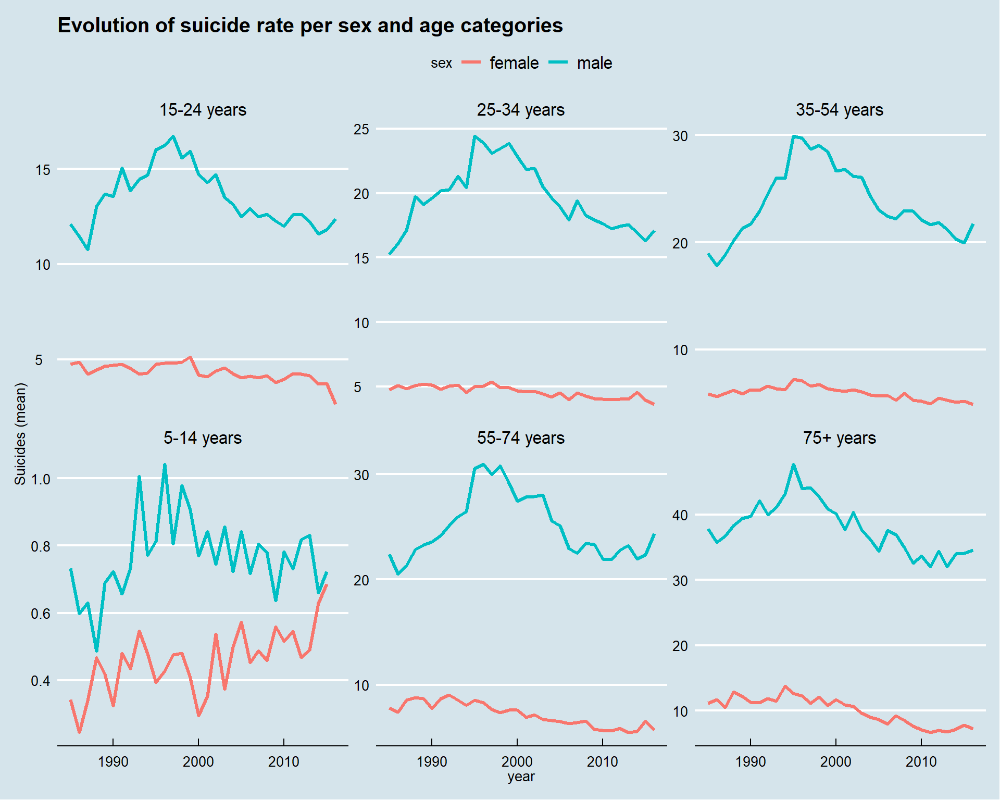

Overview of suicide in the world
2019-05-17
1 Introduction to the project

According to the WHO Suicides organization, 800.000 committed suicide in 2018. This means every 40 seconds a person dies by suicide. This number is fortunately dropping. In this kernel I want to explore the evolution of suicide rate using the dataset provided here on Kaggle.
I’ll be using the powerful R language to do this analysis, my main focus is to understand what affects the suicide rate to decrease.
Let’s start by loading the packages we’ll be using throughout this study.
pkg <- c("tidyverse", "FactoMineR", "factoextra", "knitr",
"kableExtra", "highcharter", "ggthemes", "treemap", "ggcorrplot")
pkgs <- pkg[!(pkg %in% installed.packages()[, "Package"])]
if (length(pkgs))
install.packages(pkg, dependencies = TRUE)
sapply(pkg, library, character.only = TRUE)suicide <- read.csv("../data/master.csv")
# Fix the column name of country
colnames(suicide)[colnames(suicide) == "ï..country"] <- "country"| country | year | sex | age | suicides_no | population | suicides.100k.pop | country.year | HDI.for.year | gdp_for_year…. | gdp_per_capita…. | generation |
|---|---|---|---|---|---|---|---|---|---|---|---|
| Albania | 1987 | male | 15-24 years | 21 | 312900 | 6.71 | Albania1987 | NA | 2,156,624,900 | 796 | Generation X |
| Albania | 1987 | male | 35-54 years | 16 | 308000 | 5.19 | Albania1987 | NA | 2,156,624,900 | 796 | Silent |
| Albania | 1987 | female | 15-24 years | 14 | 289700 | 4.83 | Albania1987 | NA | 2,156,624,900 | 796 | Generation X |
| Albania | 1987 | male | 75+ years | 1 | 21800 | 4.59 | Albania1987 | NA | 2,156,624,900 | 796 | G.I. Generation |
| Albania | 1987 | male | 25-34 years | 9 | 274300 | 3.28 | Albania1987 | NA | 2,156,624,900 | 796 | Boomers |
| Albania | 1987 | female | 75+ years | 1 | 35600 | 2.81 | Albania1987 | NA | 2,156,624,900 | 796 | G.I. Generation |
1.1 Variable definition
Before we go further in this analysis, it is important to know what each column or variable in the dataset stands for.
I think only the columns suicide.100k, suicide.no and HDI.for.year are problematic. Let’s explain them :
suicide.100k stands for the number of death by suicide for a total 100.000 deaths.
suicide.no is the number of suicide.
HDI.for.year is the Human Development Index of the year.